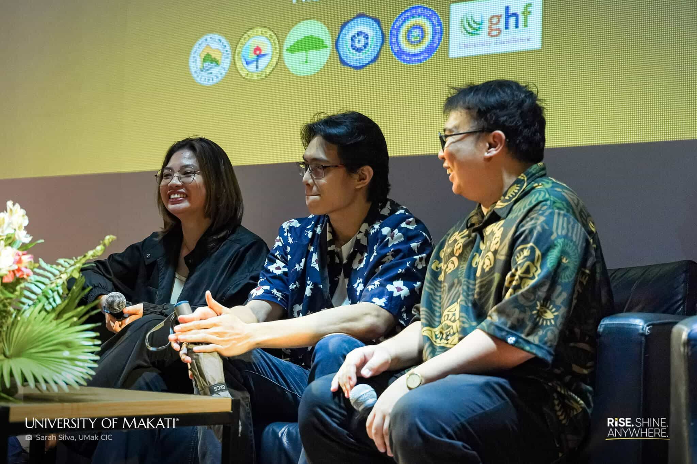
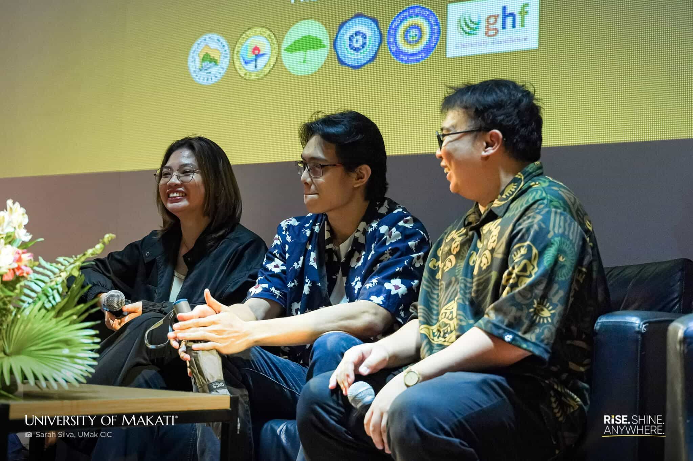

The 8th Research Congress at the University of Makati, which was held at the university auditorium, featured the students' creative research outputs in the form of four documentary films made as thesis projects. The event presented research as a necessary tool for social awareness and change. The main focus of the discussions was on the societal problems that correspond to the Sustainable Development Goals (SDGs), for example, public health (SDG 3), labor rights (SDG 8), and the right to justice and legal identity (SDG 16).
Through the Day 1 PM Session of the congress, which took place on October 22, 2025, the screening of the documentaries produced by students from the Institute of Arts and Design was formally initiated. This session illustrated that research is not only a traditional written work with methodologies but also a creative output that can be used to communicate the social reality most effectively. The student-researchers, through film, have managed to tell the stories that inform the public of the current issues in the country and initiate the discussion of these urgent national problems related to the SDGs.
Among the films presented, Panawagan ni Maria was a documentary that focused primarily on SDG 3: Good Health and Well-Being and SDG 16: Peace, Justice, and Strong Institutions. The film highlights the struggle of the Philippines for the legalization of medical cannabis and at the same time documents the country's discrimination against it, how the policies are outdated, and the struggle for the recognition of the health benefits of cannabis for patients in need. Among the issues raised in the film, the most prominent issue is the lack of health security and government support. For example, one presenter said that corruption in government institutions is reportedly the main factor that causes the stagnation of progress.
At the open forum, audience members questioned how laws and government regulations legally limited the filmmakers in their documentary promoting marijuana. The director said that organizations such as the Philippine Drug Enforcement Agency (PDEA) and the Department of Health (DOH) were not willing to get involved and provide information, which made it difficult to have access to official sources. As a result, the crew went to health worker-advocates, doctors, and drug war victims for reliable viewpoints and the accounts of the witnesses.
In summary, the film leaves a strong impression supporting the idea that the fight for the legalization and the right use of medical cannabis is not only an argument of policies but most importantly a plea to humanity to respect dignity, give priority to scientific facts, and make sure every patient is given compassionate, evidence-based healthcare.
 
